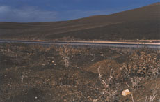

|
LE RETOUR AU PAYS DE L'ENFANCE
BACK TO THE LAND OF CHILDHOOD
Claire Angelini | F 2009 | 100 Min.
Material: 35mm
Format: DigiBeta
Originalsprache: Französisch, Deutsch, Polnisch, Berber
Drehbuch: Claire Angelini
Kamera: Kirpal Singh (Boris) Breckoff, Sébastien Buchmann
Ton: Isabelle de Mullenheim, Claire Angelini
Schnitt: Claire Angelini
Mit Marie-Hélène Trevet, Sieglinde Last-Tripodi, Narriman Bougherara
Produktion: Finavril, Claire Angelini, Atopic, Christophe Gougeon
Vertrieb: Claire Angelini
Weltpremiere
Ein Film über die verlorenen Landschaften unserer Kindheit. Drei Frauen aus Frankreich, Deutschland und Algerien erinnern sich: an die Zeit ihrer Kindheit, an die Orte, die sich mit ihr verknüpften und an die politischen Geschehnisse, die sich mit der Zeit und dem Ort verbanden. Der Zweite Weltkrieg und der Algerienkrieg sind die Folie für die persönlichen Erzählungen von Milizenschaft, Vertreibung und militantem Widerstand und für die allgemeinere Frage: Inwiefern sind Landschaft und Zeitgeschichte prägend für unsere persönliche Geschichte und Biographie? Die Landschaft: sie ist räumliche Umgebung, ist der Ort, wo sich die Zeitgeschichte manifestiert und immer auch Landschaft unserer inneren, emotionalen Zustände.
Claire Angelini, geb. 1969 in Nizza, Frankreich. Studium an der Ecole Nationale Supérieure des Beaux Arts und am Institut für Kunstgeschichte, Sorbonne, Paris. Von 2003-2004 Gaststudentin an der Hochschule für Fernsehen und Film HFF, München. Ihre Videoarbeiten wurden in zahlreichen Installationen ausgestellt. Neben ihren filmischen Arbeiten hat sie auch Kunstbücher veröffentlicht. Angelini lebt und arbeitet in München und Paris.
Filme und Videoarbeiten (Auswahl): Ici s’atteint la limite de l’effort pédagogique 2004 | Es geht eine dunkle Wolk herein 2005 | SHE/SEE 2007 | La mémoire n’est pas un jeu d’enfant 2007 | Loci soli/Soliloques 2007 | Le retour au pays de l’enfance 2009
zurück
|